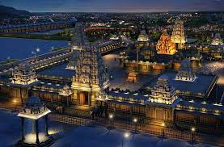
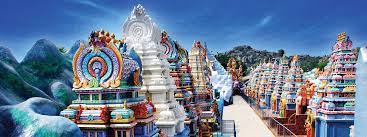
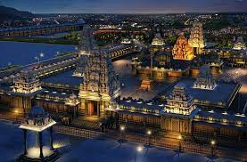
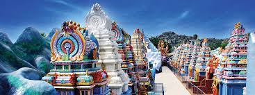

Nagarjuna Sagar Dam

Bhongir Fort

Yadagiri gutta

Chaya Someswara Temple

Nagarjuna Sagar Dam |
Bhongir Fort |

Yadagiri gutta |
Chaya Someswara Temple |

Surendrapuri |
Nagarjuna Sagar Dam is a masonry dam across the Krishna River at Nagarjuna Sagar which straddles the border between Palnadu district in Andhra Pradesh and Nalgonda district in Telangana. The dam provides irrigation water to the districts of Palnadu, Guntur, Nalgonda, Prakasam, Khammam, Krishna, and parts of West Godavari. It is also a source of electricity generation for the national grid
The Bhongir fort adorns the place from the time it was built in 10th century. Bhongir Fort was built on an isolated monolithic rock by the Western Chalukya ruler Tribhuvanamalla Vikramaditya IV in the year 1076 and was thus named after him as Tribhuvanagiri, later it was called as Bhuvanagiri. Some of the inscriptions found in the fort were in Kannada and Telugu language highlighting the lifestyle of the people of that era.
Yadagirigutta is a census town in Alair Assembly constituency of Yadadri Bhuvanagiri district of the Indian state of Telangana.It is a temple town as the famous Lakshmi Narasimha Temple is situated here. It is located at a distance of 16 Kms from the district headquarters Bhuvanagiri which is a part of Hyderabad Metropolitan Region and 55 Kms from Uppal, a major suburb of Hyderabad. The proposed Hyderabad Regional Ring Road passes through Yadagirigutta.
Chaya Someswara Temple, also known as the Chaya Someshvara Swamy Alayam or the Saila-Somesvara temple, is a Saivite Hindu temple located in Panagal, Nalgonda district of Telangana, India. It was built around the mid 11th-century during the rule of the Kunduru Chodas , supported and embellished further by later Hindu dynasties of Telangana. Some date it to late 11th to early 12th-century.
Surendrapuri is a religious tourism destination located near Hyderabad, Telangana, India in the Yadadri Bhuvanagiri district.The 17-acre religious complex includes the Kunda Satyanarayana Kaladhamam - India's first mythological museum, Panchamukha Hanumadeeswara Devasthanam (Hindu temple), Navagraha temples, Nagakoti idol, and Surendrapuri’s iconic two-sided Panchamukha Hanuman-Shiva statue.